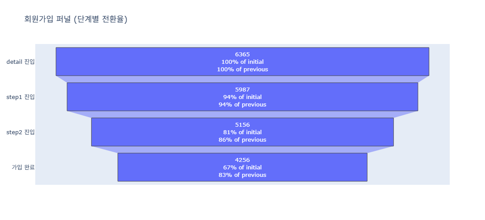
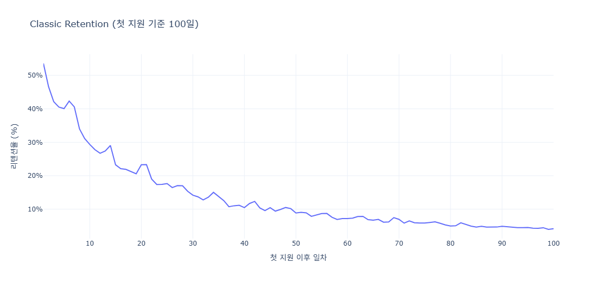
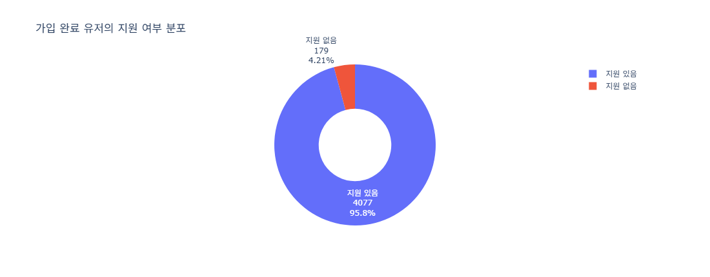
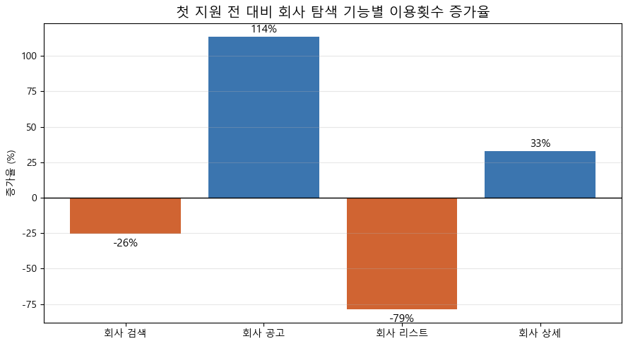
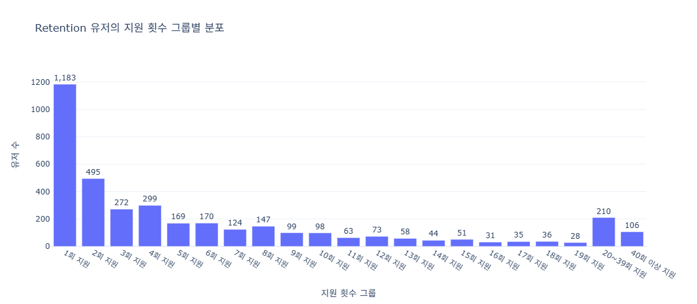
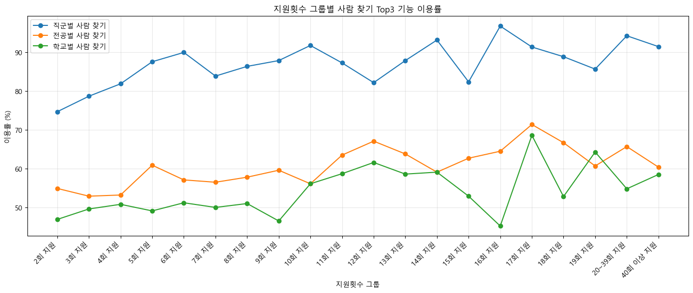
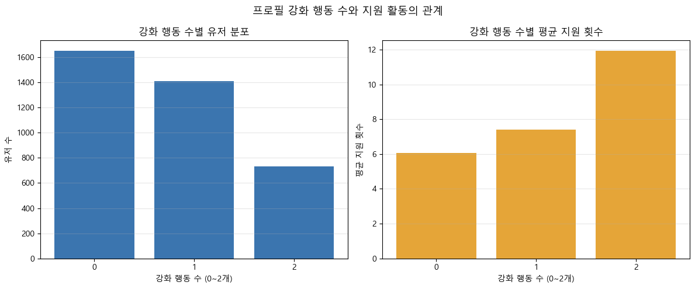

원본: notebooks/05_CoreUser_Report.ipynb (Acquisition·Activation·Retention 3개 노트북 + 프로필 강화 분석을 종합한 최종 리포트) · 분석 기간 2022-01-01 ~ 2023-12-31
채용 플랫폼의 핵심 가치는 단순 방문자를 실제 구직 활동을 수행하는 Quality User로 전환하고, 이들을 Core User로 정착시키는 것이다. Quality User는 가입 완료 + 실제 지원(1건 이상) + Retention(첫 지원 후 24시간 초과 시점 주요 URL 재방문)으로 정의한다.
가입 퍼널은 detail → step1 → step2 → step3/done 순으로 진행되며, 최종 가입 완료율은 상세 페이지 진입 대비 67%다.

가입을 완료하고 첫 지원까지 마친 유저를 기준으로 Retention을 측정하면, 전형적인 급감 후 완만화 패턴을 보인다.

가입 완료 유저의 95.8%는 실제로 1건 이상 지원한다 — 가입과 지원 사이의 이탈은 크지 않다.

지원이라는 이벤트를 기점으로, 회사 탐색 방식이 '브라우징'에서 '타기팅'으로 전환된다.

Retention 유저의 지원 횟수는 1회에 크게 몰려 있는 긴 꼬리 분포이지만, 20회 이상 반복 지원하는 유저층도 상당수(약 316명) 존재한다.

지원 횟수가 늘수록 오퍼·사람 찾기 같은 심화 기능의 이용률도 함께 올라간다.

프로필 강화 행동(포트폴리오 등록, 경력검증)과 지원 활동의 관계를 보면, 이 노트북에서 가장 뚜렷한 상관관계가 나타난다.

| 제안 액션 | 관찰된 근거 |
|---|---|
| 지원 완료 직후 다음 추천 공고 강화 | 지원 후 회사 공고 이용 +114% (그림 4) |
| 회사 상세 페이지에 관련 공고·유사 회사 노출 | 회사 상세는 지원 전후 모두 95~100% 이용되는 필수 경로 (그림 4) |
| 10회 이상 지원 유저에게 직군별 사람 찾기 노출 | 고활동 유저의 네트워크 탐색 이용률이 지속적으로 높음 (그림 6) |
| 포트폴리오·경력검증 완성 온보딩 가이드 | 강화 행동을 모두 수행한 유저의 평균 지원 수가 약 2배 (그림 7) |
| 가입 step1→step2 이탈 구간 UX 개선 | 가입 퍼널에서 이탈률이 가장 큰 구간 (그림 1) |
| 첫 주(Day 1~7) 재방문 유도 넛지 강화 | Day 7~14 구간이 장기 Retention 여부를 가르는 분기점으로 보임 (그림 2) |
우선순위(실행 순서)는 팀 리소스·기술 난이도 등 이 분석 밖의 정보에 달려 있어 별도로 매기지 않았다. 위 액션들은 모두 노트북에서 실제로 관찰된 수치를 근거로 한다.
추가 분석 제안(노트북 내 명시): 합격/불합격 결과 URL 경험률과 지원 지속성의 관계, 지원 공백 기간 구간별 재지원 패턴, 커뮤니티/콘텐츠 카테고리 행동과 지원 활동의 관계, 코호트별(가입 월·직군) 리텐션 비교.